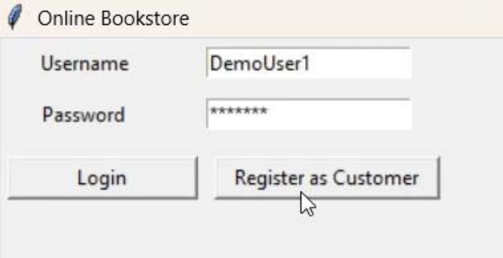
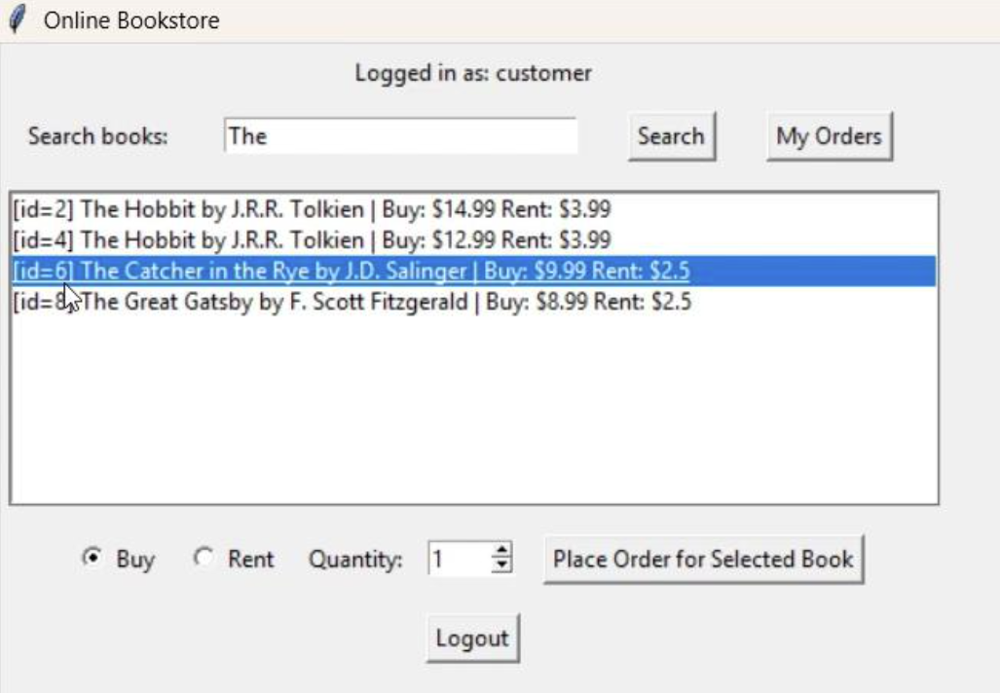
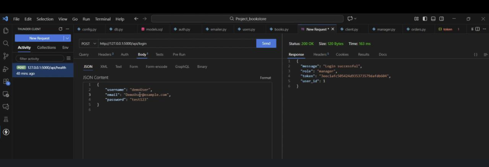
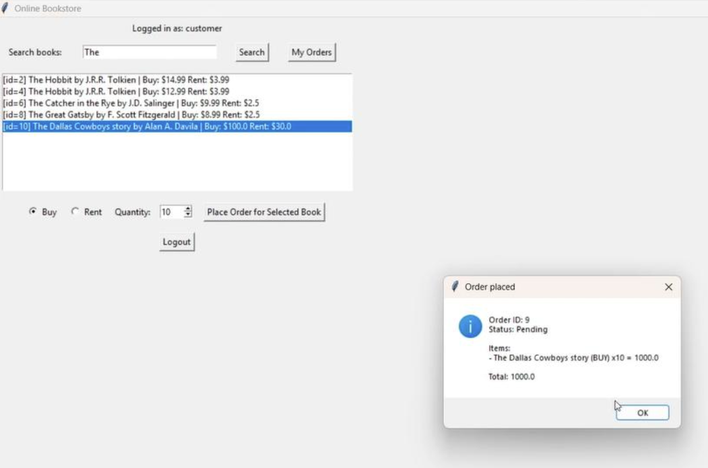

PROJECT OVERVIEW
Database-Driven Bookstore
The project was designed around a relational database storing bookstore information such as books, customers, orders, and payment-related data.
Application logic exposes this data through customer and manager workflows while maintaining the database as the central source of application state.
AUTHENTICATION
Login & User Roles

Authentication separates customer functionality from manager-level functionality and allows different workflows to be presented depending on the user.
CATALOG
Book Search & Catalog

Customers can browse and search bookstore data retrieved from the underlying relational database.
The catalog connects user-facing application functionality with database records rather than relying on static product information.
API DEVELOPMENT
GET & POST Operations

API routes were tested using GET and POST requests to verify communication between the application layer and database-backed services.
JSON API
Structured Application Data

JSON responses provide a structured interface between application components and make database information available through defined API endpoints.
ORDER WORKFLOW
Order Confirmation

The order workflow combines customer selection, database operations, order creation, and confirmation into one complete application flow.
The system also supports purchasing and rental functionality rather than limiting users to a simple catalog lookup.
ARCHITECTURE
Application Structure
FEATURES